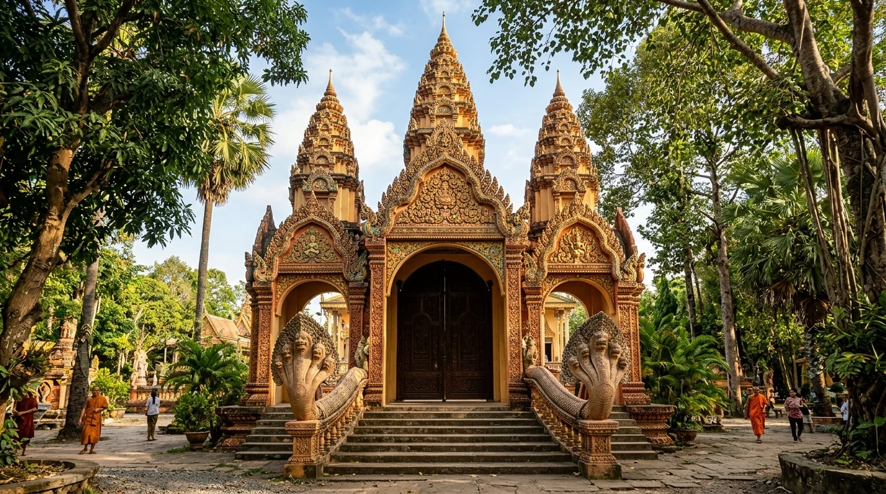

🧭 1. Tổng Quan Chùa Dơi — Viên Ngọc Văn Hóa Khmer Hơn 450 Năm
Theo sử liệu nhà chùa và hồ sơ di tích quốc gia, chùa được khởi dựng từ năm 1569 (hơn 450 năm trước) do ông Thạch Út vận động bà con Phật tử Khmer dựng ban đầu bằng tre lá để làm trung tâm tu học, sinh hoạt văn hóa và giáo dục chữ viết của phum sóc. Qua nhiều lần trùng tu bằng gạch ngói năm 1890, 1960 và phục hồi nguyên trạng Chánh điện sau sự cố hỏa hoạn năm 2007–2009, ngôi chùa vẫn giữ trọn vẹn đường nét mỹ thuật truyền thống Khmer Nam Bộ và được xếp hạng Di tích Kiến trúc – Nghệ thuật cấp Quốc gia theo Quyết định số 05/1999/QĐ-BVHTT ngày 12/02/1999. Theo Nghị quyết 1668/NQ-UBTVQH15 năm 2025, địa bàn Phường 3 (TP. Sóc Trăng cũ) nơi chùa tọa lạc nay thuộc phường Phú Lợi, TP. Cần Thơ.
Giữa khuôn viên rộng khoảng 4 ha rợp bóng những cây sao, cây dầu cổ thụ trăm tuổi, tòa Chánh điện vươn cao với hệ mái lợp ngói màu vàng đất chồng nếp uốn cong vút, diềm mái chạm rắn thần Naga 5 đầu, hàng cột hiên điểm xuyết tiên nữ có cánh Kaynor (Kinnari) chắp tay nâng đỡ mái chùa. Không chỉ lưu giữ pho tượng Đức Phật Thích Ca bằng đá sa thạch nguyên khối và bộ kinh Phật viết trên lá buông quý hiếm, khu rừng cây cổ thụ quanh chùa còn là mái nhà bình yên của hàng vạn cá thể dơi quạ lớn treo mình trên cành cây — minh chứng cảm động cho lòng từ bi bất sát sinh của nhà Phật (đáng chú ý là đàn dơi chỉ đậu trên tán cây vườn chùa, tuyệt nhiên không bao giờ bay đậu lên nóc Chánh điện).
📜 2. Nghi Thức Hành Lễ Nam Tông Khmer & Bảo Vệ Đàn Dơi Tự Nhiên
Đối với đồng bào Khmer Nam Bộ, ngôi chùa (Wat) là trái tim thiêng liêng bậc nhất của cả cộng đồng phum sóc. Du khách hành hương cần tuân thủ sự tôn nghiêm của truyền thống Phật giáo Nam tông và bảo vệ hệ sinh thái tự nhiên:
🏮 3 Quy Chuẩn Cốt Lõi Khi Chiêm Bái Chùa Dơi (Wat Mahatup)
🙏 Nghi Thức Kính Lễ Truyền Thống Nam Tông
Trong Chánh điện Phật giáo Nam tông Khmer chỉ tôn thờ duy nhất Đức Phật Thích Ca Mâu Ni. Bỏ giày dép, mũ nón bên ngoài bậc thềm Sêma, bước qua ngưỡng cửa không giẫm lên bậu gỗ; phụ nữ giữ khoảng cách đúng giới luật khi chào hỏi chư Tăng khoác y vàng.
🦇 Tuyệt Đối Không Làm Kinh Động Đàn Dơi Quạ
Đàn dơi quạ ngủ ban ngày trên ngọn cây sao – dầu và bay đi kiếm ăn lúc chập tối: nghiêm cấm la hét, vỗ tay lớn, ném đá hay dùng flycam bay sát tán cây làm xáo trộn đời sống tự nhiên của đàn dơi.
🪷 Lễ Phẩm Thanh Khiết & Không Đốt Vàng Mã
Truyền thống Phật giáo Nam tông không đốt vàng mã; hành giả dâng hoa sen hồng gấp cánh nghệ thuật, nến thơm, nhang trầm tại lư ngoài sân và cúng dường Tam Bảo tùy tâm.
⛩️ 3. Lộ Trình 6 Trạm Cổ Tự Khmer & Chánh Niệm
Lộ trình 6 trạm đưa hành giả qua cổng rắn thần Naga, chiêm ngưỡng hàng cột tiên nữ Kaynor, đảnh lễ Đức Phật Thích Ca tại Chánh điện, thăm Nhà Sala lưu giữ kinh lá buông, tản bộ dưới tán rừng sao – dầu và ngắm khu tháp cốt – ghe Ngo truyền thống.
Hành Trình Thiền Hành Chùa Dơi — Tinh Hoa Khmer Nam Bộ
Lắng nghe tiếng kinh Pali trầm hùng hòa cùng tiếng lá rừng sao xào xạc giữa ngôi cổ tự hơn bốn thế kỷ miền sông Hậu.

Đón bước hành giả là cổng chùa Wat Mahatup rực rỡ sắc vàng son đặc trưng mỹ thuật Khmer Nam Bộ: bên trên vươn cao ba ngọn tháp nhọn chạm hoa văn lửa (ភ្ញីភ្លើង), hai bên thành bậc đắp nổi hình rắn thần Naga 5 đầu xòe mang uy vệ vươn dài bảo hộ cho vùng đất Phật thanh tịnh.
🙏 Nét Đẹp Cử Chỉ Chào Sampeah
- Người Khmer chắp hai bàn tay khép hờ như búp sen nâng ngang trán khi kính lễ Phật, nâng ngang mũi – miệng khi kính chào chư Tăng và bậc trưởng bối.
- Chỉnh trang y phục lịch sự, kín vai và đầu gối trước khi qua cổng chùa.
- Đi chậm rãi trên con đường rợp bóng cây cổ thụ dẫn vào trung tâm.
🐍 Ý Nghĩa Rắn Thần Naga Trong Phật Giáo Nam Tông
- Theo kinh điển Pali, tuần thứ sáu sau khi Đức Phật thành đạo gặp mưa giông lớn, vua rắn Naga Mucalinda đã cuộn mình nâng tòa và xòe mang che mưa gió cho Đức Thế Tôn nhập định.
- Hình tượng Naga trên cầu thang và mái chùa tượng trưng cho chiếc cầu vồng nối cõi người với cõi giác ngộ.
- Biểu trưng cho sự cảm hóa cái dữ thành thiện thần hộ pháp.
CHỨNG NHẬN CHIÊM BÁI CỔ TỰ CHÙA DƠI (WAT MAHATUP) VIÊN MÃN
Chúc mừng bạn đã hoàn thành trọn vẹn lộ trình 6 trạm tại Di tích Quốc gia Chùa Dơi — Wat Sêrây Têchô Mahatup. Nguyện cầu ánh sáng từ bi và trí tuệ của Đức Thế Tôn gia hộ cho bạn cùng gia quyến thân tâm an lạc, phước huệ tròn đầy (Sadhu! Sadhu! Lành thay!).
🧭 4. Lịch Trình Văn Hóa Tâm Linh Khmer Nam Bộ 1 Ngày
Gợi ý hành trình 1 ngày khám phá chiều sâu văn hóa Kinh – Khmer – Hoa đoàn kết gắn bó tại khu vực Phú Lợi – Sóc Trăng (cách trung tâm Ninh Kiều ~60km về phía Nam):
Buổi Sáng (07h30 – 11h00): Chiêm Bái Chùa Dơi (Wat Mahatup) & Nhà Sala Kinh Lá Buông
- 07h30: Đến phường Phú Lợi trong tiết trời mát dịu buổi sớm, bước qua cổng Naga vào rừng sao – dầu cổ thụ.
- 08h15: Đi nhiễu quanh hành lang tiên nữ Kaynor, đảnh lễ Đức Phật Thích Ca tại Chánh điện, thăm Nhà Sala tìm hiểu chữ viết Khmer cổ trên kinh lá buông và chiêm ngưỡng chiếc ghe Ngo truyền thống của nhà chùa.
Buổi Trưa (11h30 – 13h30): Thưởng Thức Bún Nước Lèo Chay & Bánh Pía Đậu Xanh
Dùng bữa trưa chay đặc sản miền Tây với bún nước lèo chay nấu từ nấm rơm, ngải bún và sả thơm lừng, cuốn rau ghém vườn nhà; thưởng thức bánh in, bánh pía chay nhâm nhi cùng trà nóng.
Buổi Chiều (14h00 – 17h30): Bảo Tàng Văn Hóa Khmer, Chùa Đất Sét & Đón Hoàng Hôn Đàn Dơi
- 14h00: Tham quan Nhà trưng bày Văn hóa Khmer ngay đối diện khu vực chùa và ghé viếng Chùa Đất Sét (Bửu Sơn Tự) nổi tiếng với hàng nghìn pho tượng đất sét cùng 8 cây đèn cầy đại.
- 17h00: Dừng chân yên lặng từ xa ngắm khoảnh khắc đàn dơi quạ sải cánh rời tán rừng sao đi tìm trái cây lúc hoàng hôn buông xuống.